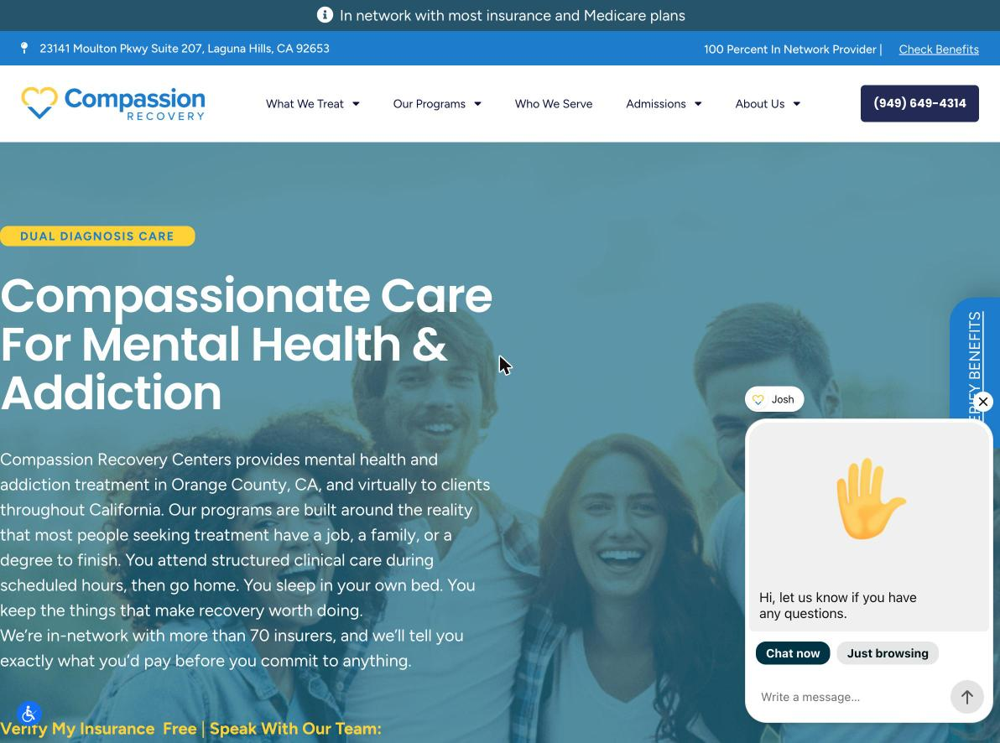
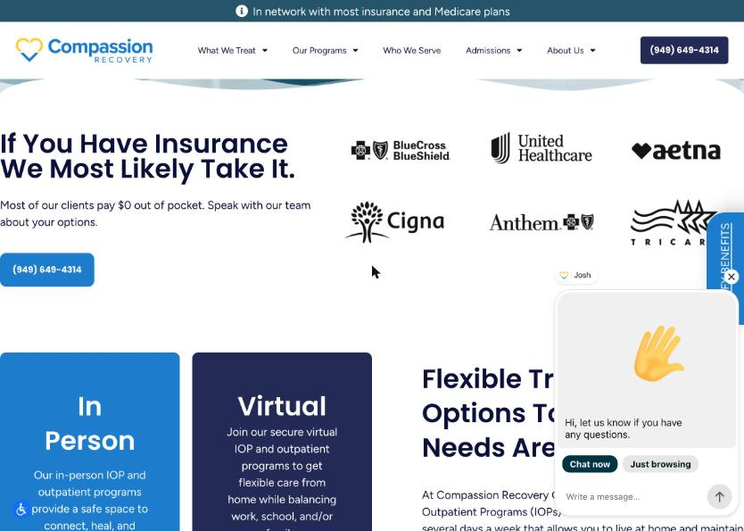

Insurance statements disagree with each other
High prioritySeen on the live site
The homepage describes your insurance status in at least six different ways, from "100%" to "most" to "some plans might require an out-of-pocket fee."
On the site
- "In network with most insurance and Medicare plans"Homepage, top banner on every page
- "100 Percent In Network Provider"Homepage, blue bar under the banner
- "We're in-network with more than 70 insurers, and we'll tell you exactly what you'd pay before you commit to anything."Homepage, hero paragraph
- "Most of our clients pay $0 out of pocket."Homepage, "If You Have Insurance We Most Likely Take It"
- "Many plans cover the majority of treatment costs, whereas others might require some out-of-pocket fee."Homepage, Step 1 "Insurance verification"
- "We are 100% in Network Provider. Most of our clients pay $0 out of pocket.""Verify Insurance For Free" pop-up
- "We're proud to be in-network with major insurance carriers."Homepage, above the footer



Also checked: the homepage text has no mention of Medi-Cal or Medicaid. The Medicare reference is in the banner only.
Why it matters
A family in crisis reads "100%" and "$0," then reads "some plans might require a fee." Mixed signals slow the first call. Payer-specific claims also need to be backed by your contracts.
Fix
Choose one qualified sentence, for example the "tell you exactly what you'd pay" line, and use it everywhere. State Medi-Cal status plainly either way.
To see it yourself: open the homepage, then click the "Verify Benefits" tab on the right edge.